Kuzumaki
Kuzumaki · Iwate
Kuzumaki
Highlighted on the Iwate map.
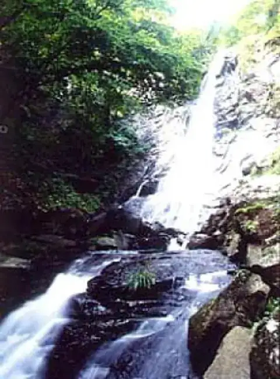
Stay
くずまき交流館プラトー
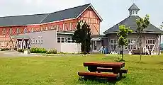
Kuzumaki Koryukan Plateau
Hotel in Kuzumaki, Iwate.
Dining
森のそば屋
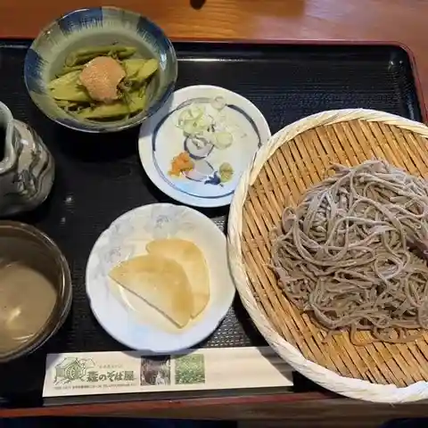
Mori Nosoba Ya
Soba restaurant in Kuzumaki, Iwate.
くずまき交流館プラトー
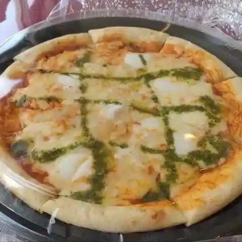
Kuzumaki Kouryuu Kan Puratoo
Inn restaurant in Kuzumaki, Iwate.
パンハウスくずまき
Panhausu Kuzumaki
Bakery in Kuzumaki, Iwate.
クローバー畑
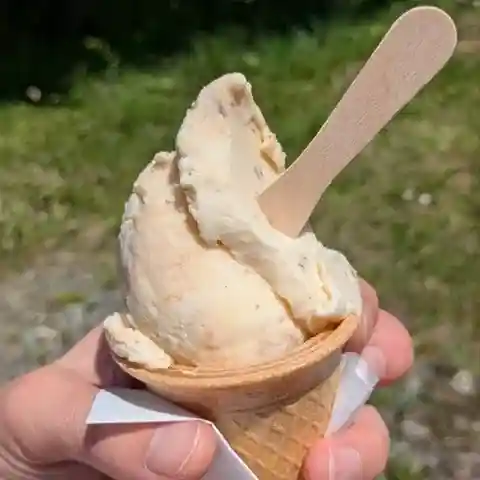
Kuroobaa Hatake
Gelato and ice-cream shop in Kuzumaki, Iwate.
グリーンテージ
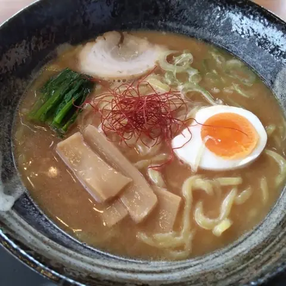
Guriinteeji
Hotel restaurant in Kuzumaki, Iwate.
くずまき高原牧場
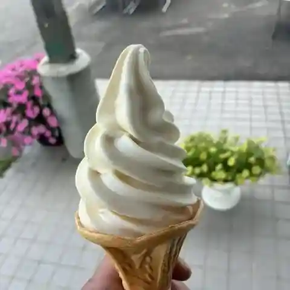
Kuzumaki Kougen Bokujou
Gelato and ice-cream shop in Kuzumaki, Iwate.
リベロ
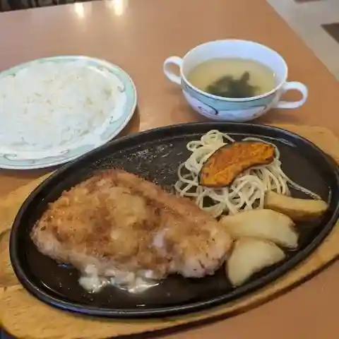
Ribero
Café in Kuzumaki, Iwate.
山口食堂
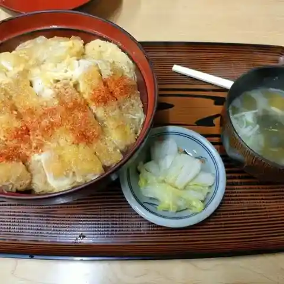
Yamaguchi Shokudou
Ramen shop in Kuzumaki, Iwate.
くずまき高原ちゃや
Kuzumaki Kougen Chaya
Soba restaurant in Kuzumaki, Iwate.
近亀
Kin Kame
Izakaya in Kuzumaki, Iwate.
バロン
Baron
Coffee shop in Kuzumaki, Iwate.
農村レストラン みち草の驛
Nouson Resutoran Michi Kusa No Eki
Japanese restaurant in Kuzumaki, Iwate.
焼肉ハウス
Yakiniku Hausu
Bar in Kuzumaki, Iwate.
レストハウス 袖山高原
Resutohausu Sodeyama Kougen
Yakiniku (grilled meat) restaurant in Kuzumaki, Iwate.
のとや
Notoya
Tempura restaurant in Kuzumaki, Iwate.
Cafe やどり木
Cafe Yadori Ki
Café in Kuzumaki, Iwate.
すずらん亭
Suzuran Tei
Yakitori restaurant in Kuzumaki, Iwate.
産直ハウス くずまき高原
Sanchoku Hausu Kuzumaki Kougen
Roadside-station eatery in Kuzumaki, Iwate.
大城屋
Ooshiro Ya
Ramen shop in Kuzumaki, Iwate.
茶香
Cha Kaori
Sushi restaurant in Kuzumaki, Iwate.
Sights
Kuzumaki Kogen Ice Cream
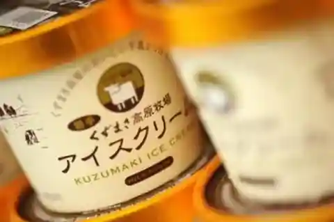
Made with plenty of high-quality milk from cows fed plenty of high-quality roughage at Kuzumaki Kogen Farm, our ice cream has a low-calorie and sweet flavor that will leave you with the aroma of the highlands in your mouth.
Mori no Sobaya
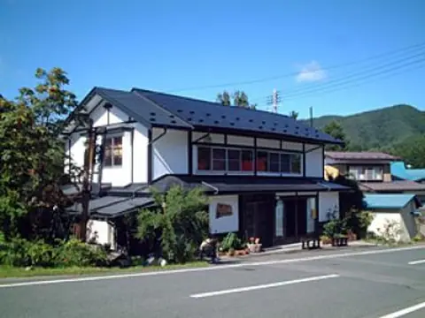
Handmade soba noodles are made by grinding locally produced buckwheat flour using a water wheel.
Kuzumaki Nabe (Hot Pot)
This is a single-serve hotpot made with Kuzumaki-cho's abundant local specialties such as meat, vegetables, dairy products, and red wine, and topped with flat noodles produced in the town, "Hibogahat".
Kuzumaki Kogen Milk
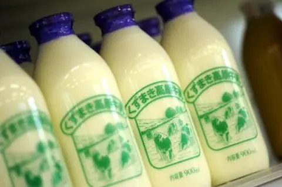
At Kuzumaki Kogen Farm, we use high-quality milk from cows that have taken in plenty of high-quality roughage, and we use a non-homogenized method that sterilizes ingredients at 75°C for 15 minutes without adjusting the ingredients.This is natural milk.
Kuzumaki Wine
Wild grapes are rare because of their small fruits, cluster volume, and low yield, and have been said to be effective in nourishing and tonicizing, increasing blood flow, and relieving fatigue since ancient times.
Michikusa no Eki (Pop-Up Sales Only)
We travel to sell simple Japanese sweets made by local mothers, such as Mameshitogi (green beans and black beans), mugwort daifuku, mugwort mochi, ohagi, dengaku mochi, and wheat dango.
Mabechi River Source
The festival is held as part of a river protection campaign to protect and nurture clear streams and to express gratitude for the blessings of Mabuchi River, the second largest river in the prefecture, which originates from Sodeyama Plateau in Kuzumaki…
Woody Forest Hall/Charcoal Science Museum
Woody Forest Hall/Charcoal Science Museum
Sodeyama Plateau
You can see the mountain ranges of the Kitakami Highlands and the Ou Mountains, including Mt.
Mount Tobetsu
There is a trailhead across the road from the entrance to the headwaters of the Mabuchi River, and after walking for about 10 minutes from the trailhead, the view suddenly opens in front of you and you emerge onto the magnificent Yasuke-daira.
Nanataki Falls
It's about a 1.5km climb along Nanatakizawa, which joins the Mabuchi River from Shimofuyube.
Kuzumaki Forest Park
A forest park where you can learn about dairy farming and forestry while experiencing the natural surroundings.